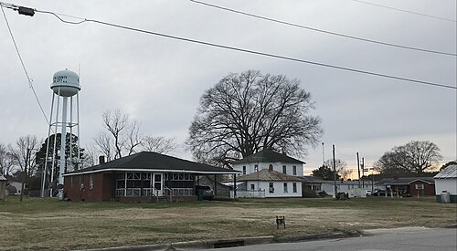

Nestled along the gentle curve of a river valley, Oaks City stands as a vibrant blend of tradition and ambition. Its skyline mixes low, sun-baked rooftops from the older quarters with modern glass buildings rising near the city center, symbolizing a community that honors its roots while reaching toward the future. Markets bustle each morning with traders calling out prices for fresh produce, colorful fabrics, and handmade crafts, while nearby, students and young professionals fill cafés, laptops open, building the next generation of ideas. The city's streets are lined with tall flowering trees that provide shade from the afternoon sun, and street musicians often gather at the central square, filling the air with rhythm and life.
Beyond its bustling core, Oaks City is known for its strong sense of community and its growing reputation as a hub for technology and learning. A cluster of coworking spaces and coding academies has sprung up near the city's main library, drawing young innovators eager to build software, launch startups, and connect with mentors. On weekends, families gather in the public parks for football matches and picnics, while the annual cultural festival draws visitors from neighboring towns to celebrate music, food, and art. Despite its rapid growth, the city has held onto a warmth and hospitality that makes newcomers feel instantly at home — a place where ambition and community exist comfortably side by side.
